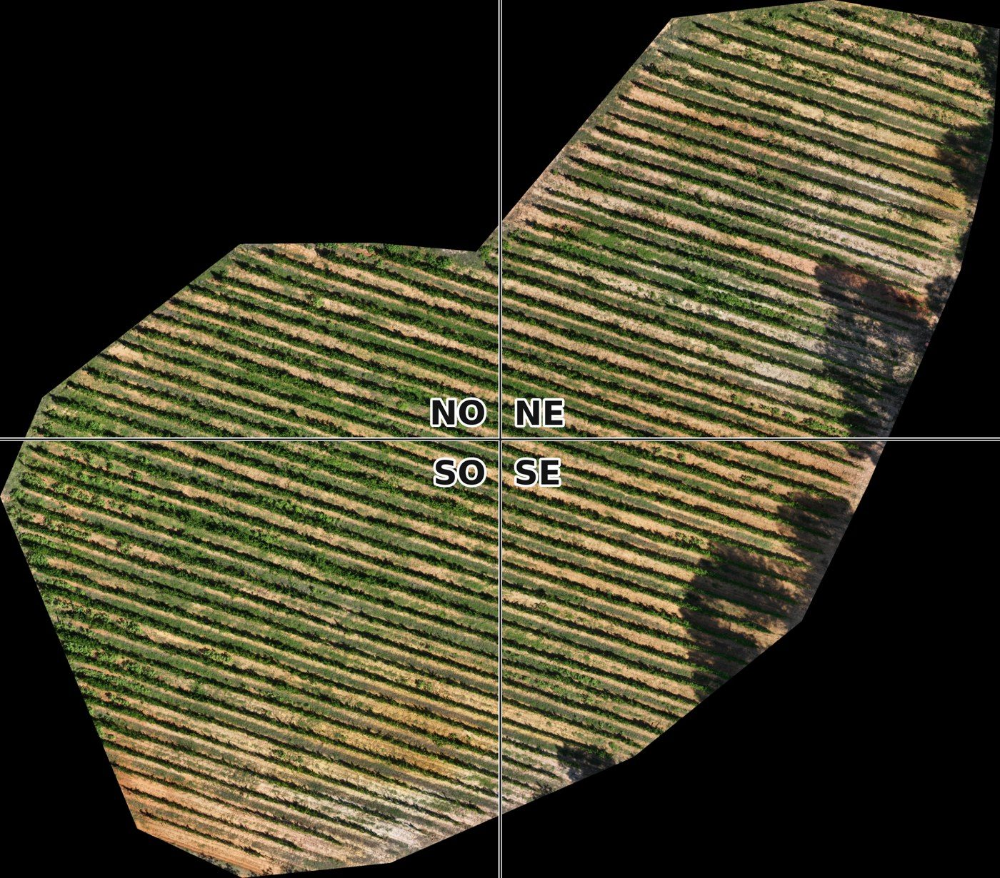
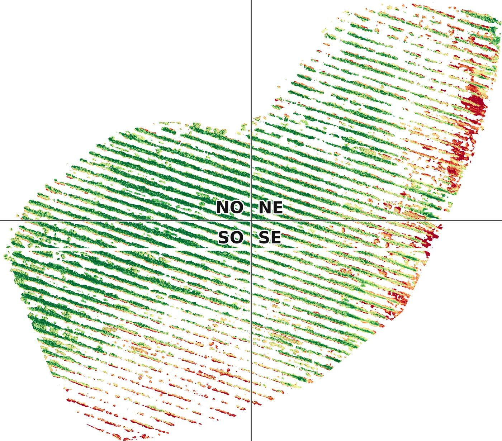
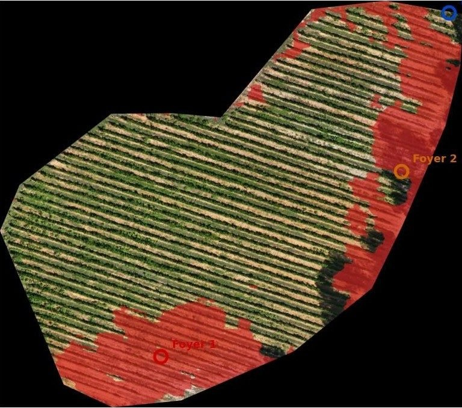
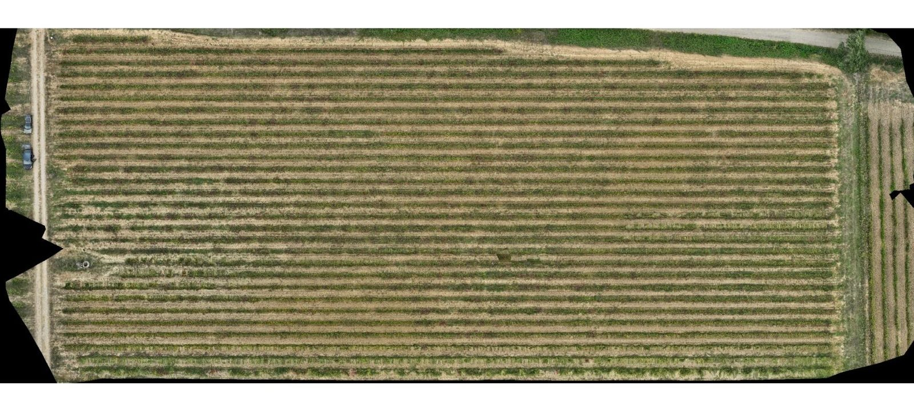
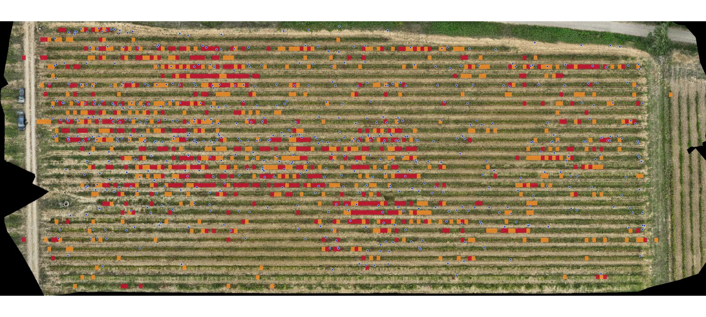
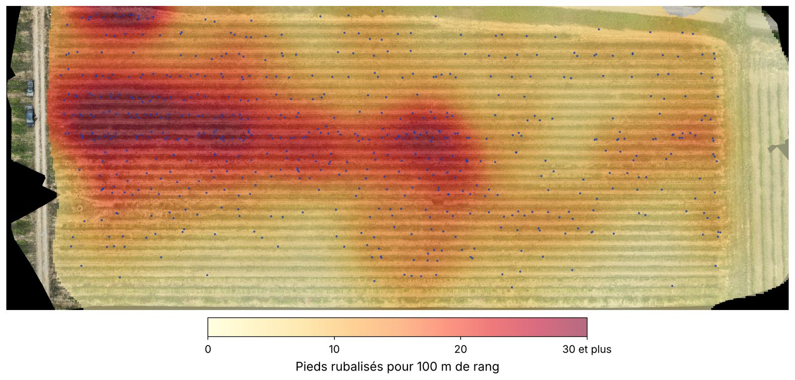
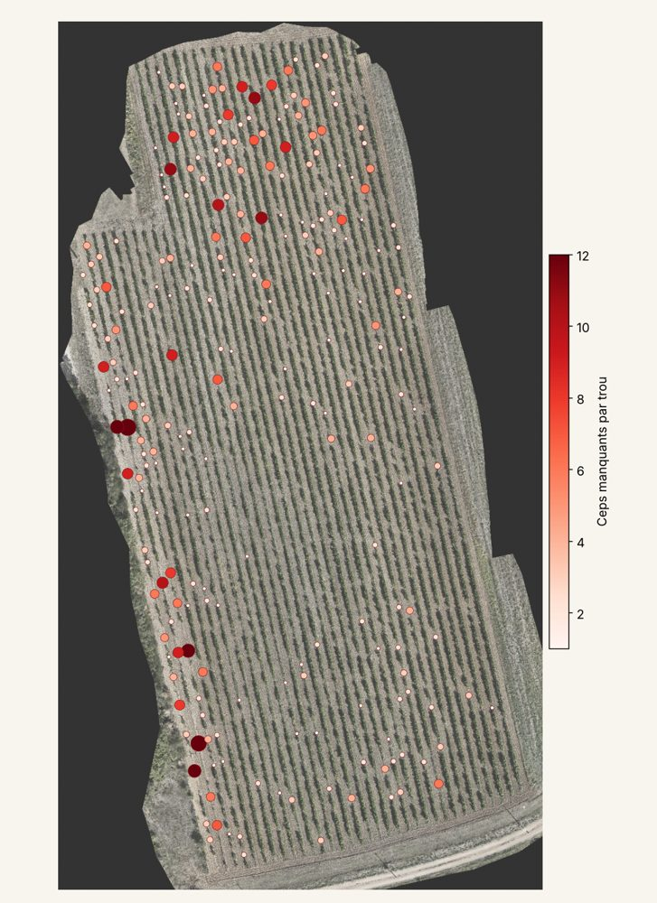

2026 results
What the drone saw
in the vineyards.
A first season on working vineyards, not in a lab. Results are anonymised and presented by grape variety. We also show what did not work: that is how we improve.
Downy mildew · Marsanne plot
Two hotspots found, with no clue given
The estate reported downy mildew without saying where. The drone had to find the areas on its own.



For a winegrower, that is the difference between treating two hotspots and treating the whole plot.
Downy and powdery mildew · 16 plots
The drone also tells you where not to go
On ten plots, no major problem was detected, which matched what the estates saw on the ground where they had inspected their vines. On the other six, the drone flagged precise areas. For a winegrower short of time in summer, knowing that a plot does not need a walk-through is worth as much as an alert.
plots with no major problem
to inspect as a priority, out of about 21 ha flown over
Flavescence dorée · Marselan plot
Mapping where the disease is
29 rows, 1.3 ha, a heavily affected plot: 584 vines marked on the ground.



At this stage, the drone finds where the disease is concentrated, not yet every single vine.
The blind test
Twenty alerts locked before we knew which vines were marked
On a lightly affected Marselan plot, the main hotspot fell within a flagged area. On a neighbouring Grenache blanc plot, two isolated vines were missed. Too few to draw conclusions, enough to shape the next steps.

What the drone cannot see yet
An isolated vine in the early stages of the disease still looks mostly green from above: the drone does not flag it. A flight too early in the morning, with a low sun and long shadows, blurs the measurement. One season is not enough to solve all of this.
In 2027, we go further
Fly at the right time
Mid-September, with a high sun.
Fly twice
A diseased vine reddens before the others.
Better ground positioning
Centimetre GPS, not a phone.
Plots in between
20 to 50 affected vines, hotspots just starting.